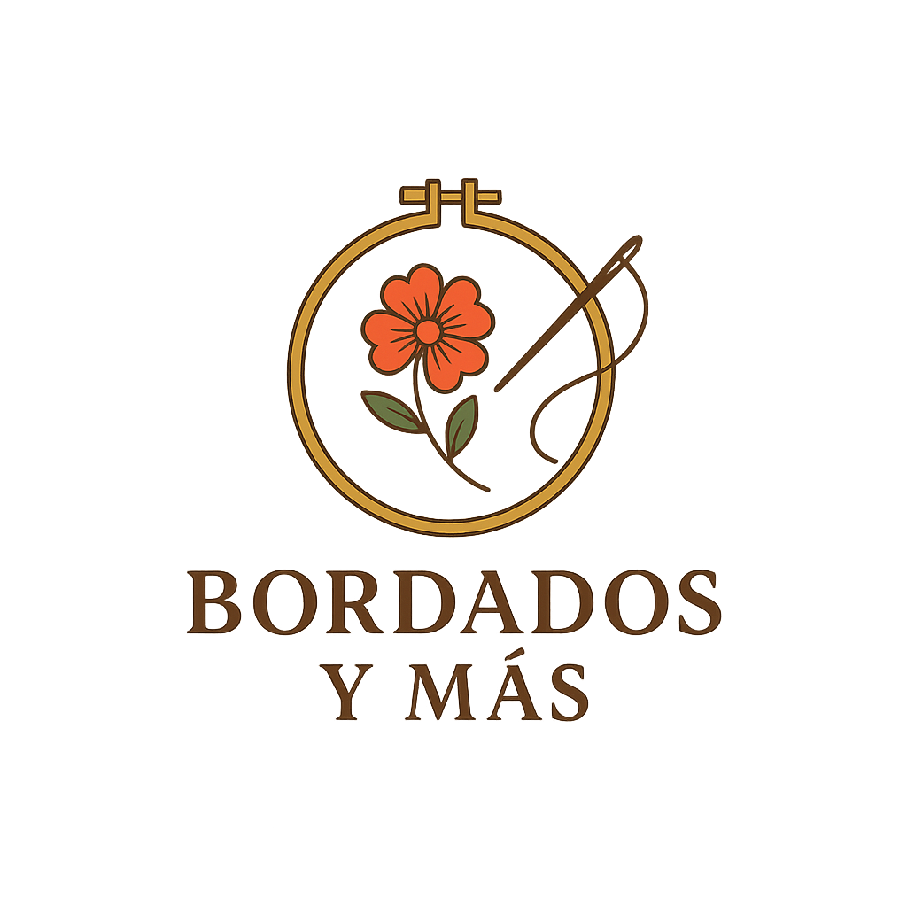
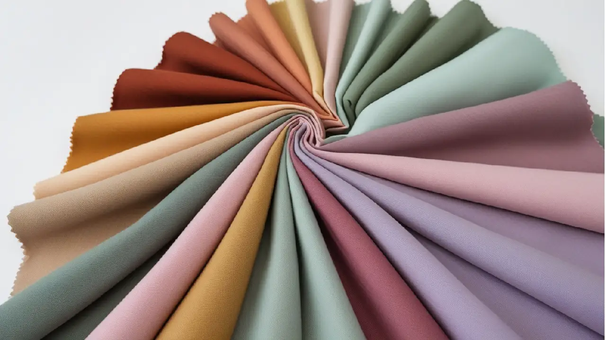
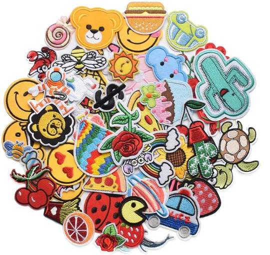
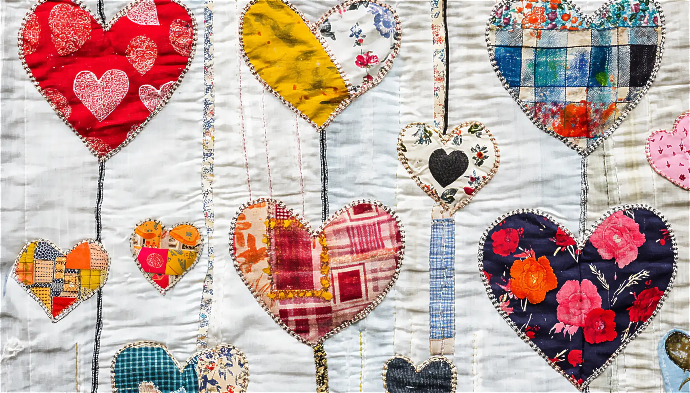
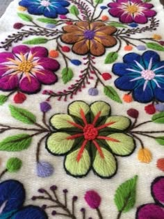
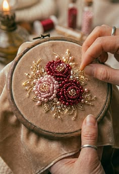
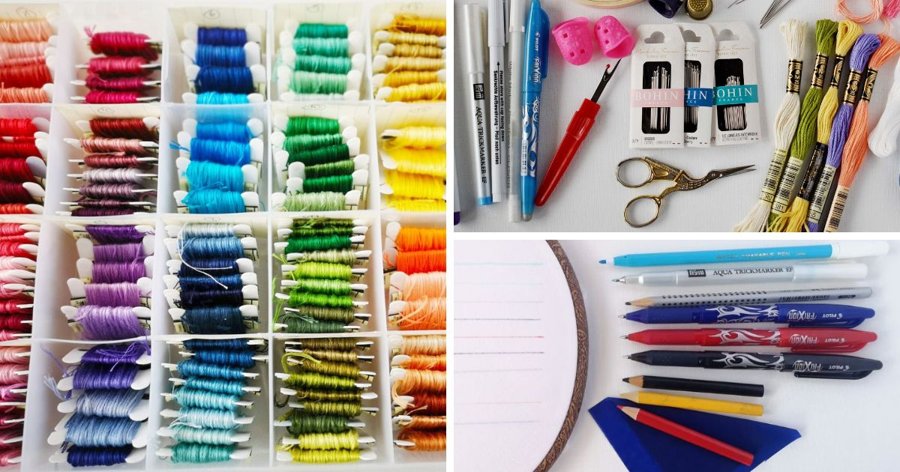

Transformamos tus ideas en obras de arte textil con más de 20 años de experiencia
En Bordados y Más, cada puntada cuenta una historia. Nos especializamos en crear bordados únicos que reflejan la personalidad y estilo de nuestros clientes.
Utilizamos técnicas tradicionales combinadas con diseños modernos para ofrecer piezas excepcionales que perduran en el tiempo.
Proyectos completados
Satisfacción del Cliente
Explora algunos de nuestros trabajos recientes






Ofrecemos una amplia gama de servicios de bordado
Diseños únicos adaptados a tus necesidades y preferencias
La tela perfecta para cada creación
¿Tienes un proyecto en mente? Nos encantará escucharlo.
313 3452574
info@bordadosymas.com
Calle Principal 123